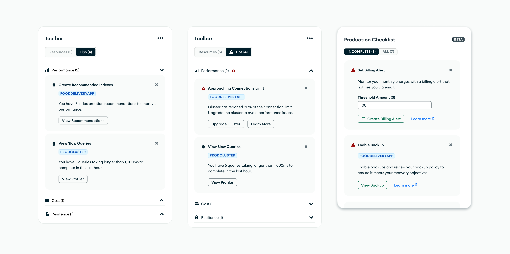
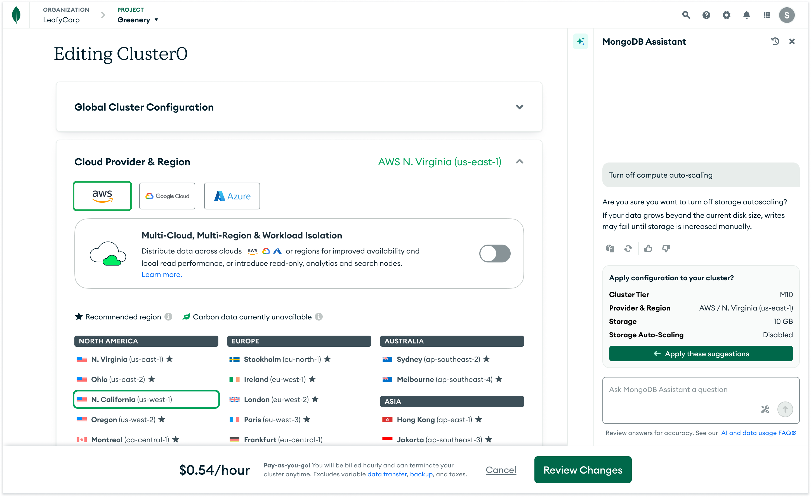
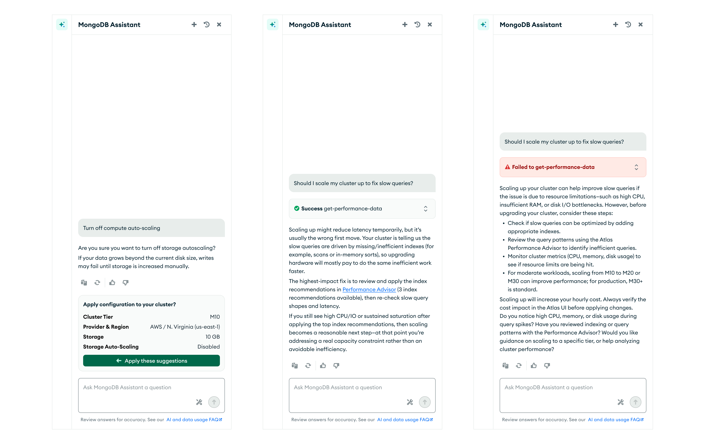

MongoDB: Atlas Growth
During my time at MongoDB, I led and contributed to a wide range of growth experiments. Many of these projects produced great results and were shipped to production and remain live today. The work spanned key parts of the user lifecycle, including onboarding, monetization, and retention.
I also contributed to experiments that did not move metrics but produced valuable insights that informed future decisions. Across all of this work, my focus was on identifying growth opportunities that addressed real user pain points while improving key business metrics.
To respect confidentiality, specific business metrics are not disclosed. Outcomes are described at a directional level.
Other Projects
Quick highlights from other experiments I led the design for.
Atlas Tips
Designed and tested tips on the Atlas home page, spanning performance and cost guidance. The experiment improved feature awareness, drove strong engagement, and was released to production.

MongoDB AI Assistant
An ongoing project focused on expanding the MongoDB AI Assistant to help users create clusters and receive more contextual guidance, including performance advice delivered through targeted tool calls.
The AI assistant can help users configure their cluster.

UI states for complex cluster configurations and tool calls.

Churn Survey
Designed a churn deflection flow for users attempting to delete a cluster due to cost concerns. The experience surfaced a downgrade option, allowing users to move to a lower tier instead of deleting their cluster. The experiment performed well and was launched to production.